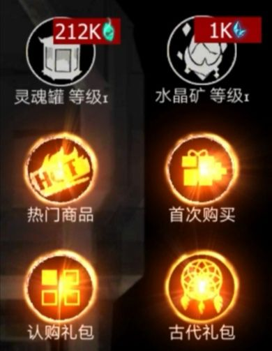
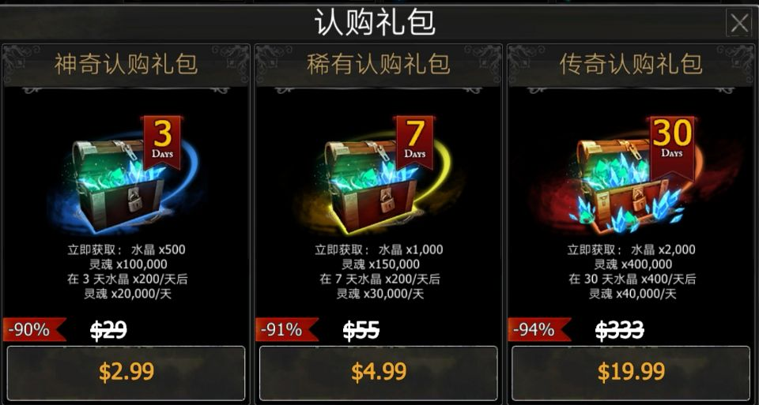
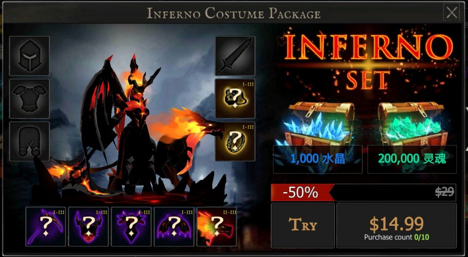

《死亡之影黑暗骑士》是一款剪影风格的横版动作闯关游戏，它可以让您的暗影骑士与无数的武器和罕见的装甲组合，使其成为一个无与伦比的英雄。在每场史诗般的战斗中，
您将成为征服黑暗世界的战士，您需要氪金收集武器装备，使自己变得更强壮。
不置可否，其实这确实是款氪金游戏，通过这组图片可以有清晰的认识：



但是，这款游戏的画面制作令人叹为观止，而且在关卡中分了普通、高难、超难、疯狂四个难度阶梯，作为一个养成类你能
不断地提升英雄水平去攻克每个难关是很享受的事情。玩此游戏最大的一个享受就是不断通过攻关来获取不同的装备不仅可以
提升银英雄的实力还能调整英雄的外观，使其越来越炫酷。